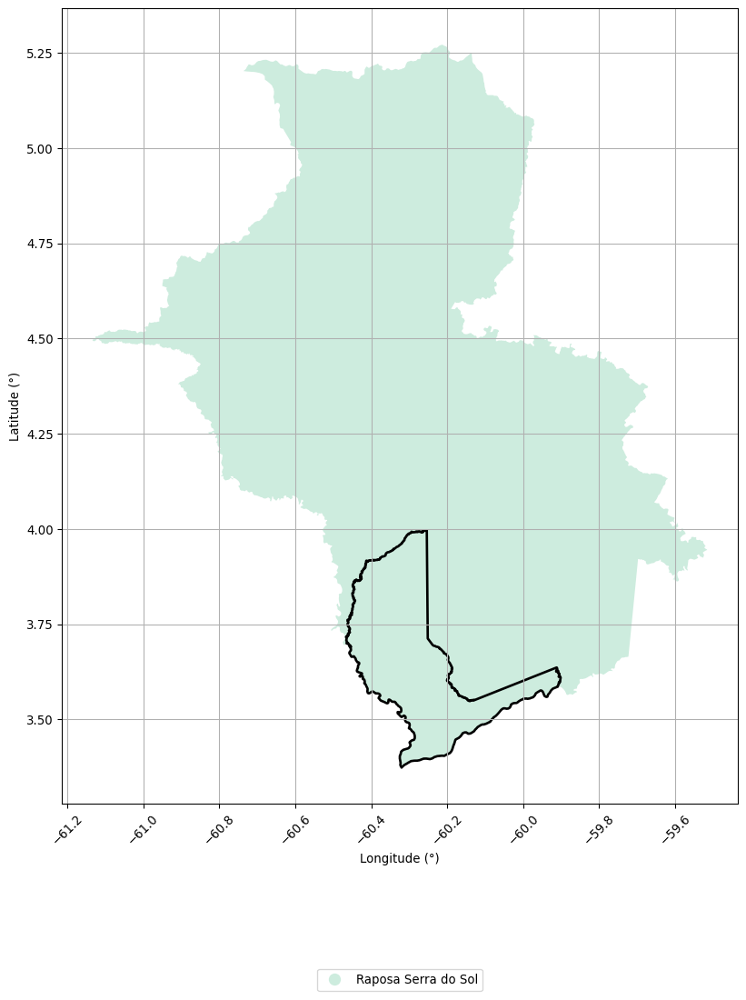

31.1 Gleba Analisada: 465 CARACARANÃ
Name: nome_gleba, dtype: object
| Nome da Gleba | Área (ha) |
|---|---|
| CARACARANÃ | 148003.5399 |
31.1.1 Abrangência Municipal

| Código da UF | Estado | UF | Código do Município | Nome do Município |
|---|---|---|---|---|
| 14.0000 | Roraima | RR | 1400100 | Boa Vista |
| 14.0000 | Roraima | RR | 1400407 | Normandia |
31.1.2 Floresta Pública
Não há sobreposição
31.1.3 Unidades de Conservação
Não há sobreposição
31.1.4 Terra Indígenas
| Nome | Fase de Regularização | Área Sobreposta (ha) |
|---|---|---|
| Raposa Serra do Sol | Regularizada | 148723.8538 |
31.1.5 Projetos de Assentamento
Não há sobreposição
31.1.6 Território Quilombola
Não há sobreposição
31.1.7 SIGEF
Não há sobreposição
31.2 Gleba Analisada: 1460 NIQUIÁ
Name: nome_gleba, dtype: object
| Nome da Gleba | Área (ha) |
|---|---|
| NIQUIÁ | 291282.9476 |
31.2.1 Abrangência Municipal

| Código da UF | Estado | UF | Código do Município | Nome do Município |
|---|---|---|---|---|
| 14.0000 | Roraima | RR | 1400209 | Caracaraí |
31.2.2 Floresta Pública

| Nome | Tipo | Categoria | Área Sobreposta (ha) |
|---|---|---|---|
| NIQUIÁ | TIPO B | GLEBA ARRECADADA | 7226.2457 |
31.2.3 Unidades de Conservação

| Nome | Categoria | Responsabilidade | Área Sobreposta (ha) |
|---|---|---|---|
| ESTAÇÃO ECOLÓGICA DE NIQUIÁ | Estação Ecológica | federal | 283910.6402 |
| RESERVA DE DESENVOLVIMENTO SUSTENTÁVEL XERIUINI | Reserva de Desenvolvimento Sustentável | estadual | 8667.6989 |
| AREA DE PROTECAO AMBIENTAL XERIUINI | Área de Proteção Ambiental | municipal | 8350.8901 |
| PARQUE NACIONAL SERRA DA MOCIDADE | Parque | federal | 0.0023 |
31.2.4 Terra Indígenas
Não há sobreposição
31.2.5 Projetos de Assentamento
Não há sobreposição
31.2.6 Território Quilombola
Não há sobreposição
31.2.7 SIGEF
Não há sobreposição
31.3 Gleba Analisada: 1571 BR-174
Name: nome_gleba, dtype: object
| Nome da Gleba | Área (ha) |
|---|---|
| BR-174 | 60125.8355 |
31.3.1 Abrangência Municipal

| Código da UF | Estado | UF | Código do Município | Nome do Município |
|---|---|---|---|---|
| 14.0000 | Roraima | RR | 1400472 | Rorainópolis |
31.3.2 Floresta Pública

| Nome | Tipo | Categoria | Área Sobreposta (ha) |
|---|---|---|---|
| JAUAPERÍ | TIPO B | GLEBA ARRECADADA | 0.0000 |
| PRETINHO | TIPO B | GLEBA ARRECADADA | 2.2268 |
| EQUADOR | TIPO B | GLEBA ARRECADADA | 93.3424 |
| BR-174 | TIPO B | GLEBA ARRECADADA | 32629.0630 |
| CACHIMBO | TIPO B | GLEBA ARRECADADA | 0.0000 |
31.3.3 Unidades de Conservação
Não há sobreposição
31.3.4 Terra Indígenas

| Nome | Fase de Regularização | Área Sobreposta (ha) |
|---|---|---|
| Waimiri-Atroari | Regularizada | 4445.2965 |
31.3.5 Projetos de Assentamento
| SIPRA | Nome | Município | Área Sobreposta (ha) |
|---|---|---|---|
| RR0008000 | PA EQUADOR | RORAINOPOLIS | 524.4238 |
| RR0011000 | PA LADEIRÃO | RORAINOPOLIS | 2861.7862 |
| RR0070000 | PA TRAIRI | RORAINOPOLIS | 798.6837 |
| RR0003000 | PAD ANAUÁ | RORAINOPOLIS | 35.1205 |
31.3.6 Território Quilombola
Não há sobreposição
31.3.7 SIGEF

| Código SIGEF | Natureza do Polígono | Área Sobreposta (ha) |
|---|---|---|
| 781abd4e-b586-4cff-bb0e-84d495301c8e | Particular | 214.5245 |
| 1303ffc8-2813-430d-88ce-7dc7066426bb | Particular | 506.1931 |
| 55ff2c81-5d1a-4870-8592-1be3cee35beb | Particular | 699.7768 |
| 3254e0ef-acfd-4e5c-9feb-07e2c50d8e73 | Particular | 199.5541 |
| 630a28c0-0814-4969-b59c-0d0eb26d606f | Particular | 685.4042 |
| f4979dec-624e-4b4c-9dee-a110af179f27 | Particular | 740.9354 |
| d3543c1f-7c17-4ae6-9fd0-f920a480b4d3 | Particular | 605.9612 |
| 615d44f1-c664-4ee2-929a-36313a79089e | Particular | 563.5694 |
| 3b8a2517-6d75-49e7-9068-e960704bb7b7 | Particular | 619.3492 |
| b29fadad-cd4e-4a7b-80f4-521339e178bb | Particular | 308.7564 |
| 9daea669-9955-4bc6-a997-28d3ae58f445 | Particular | 0.0008 |
| 32168746-f3da-4867-bf35-90165a7a05df | Particular | 213.1634 |
| 503e95d2-5d41-4dcb-a3c3-355283f50f75 | Particular | 254.5029 |
| d2f80f75-3938-4090-8b30-678fb082231b | Particular | 494.2815 |
| 8f858395-c5f3-44a7-8799-95f7f45f59c5 | Particular | 355.4952 |
| a8acb9a4-4e1f-47ed-89ae-13e6df6c3795 | Particular | 0.0003 |
| 28bd9795-cff1-41be-91ee-1b9e7c4599bb | Particular | 346.6768 |
| 9ab47e8a-a0f1-4e20-a278-c641c8687d39 | Particular | 0.0016 |
| 1babd388-1477-4ed7-9fc8-defbe31848a6 | Particular | 447.0762 |
| bf50b2f2-cfc1-4bb0-9c7b-5f25aef6fbc0 | Particular | 0.0011 |
| 20068d41-abb3-4946-a9d0-477e6eb9a805 | Particular | 433.8580 |
| ae167676-8dae-44b2-aaf6-dc526bc00f32 | Particular | 1207.0282 |
| e9f5301d-3196-4b7a-bf4c-09332b242c5d | Particular | 215.9560 |
| 5626195c-b2d8-4e86-8743-0fadfd0163d2 | Particular | 105.9724 |
| 80f0c87d-a069-4d43-bc1c-4888f3a876b7 | Particular | 582.5999 |
| e6fdbb0a-bf7b-41d2-9bd9-caae7016c2a7 | Particular | 1140.1669 |
| bbc9543f-940d-44e1-804e-4cc605382aba | Particular | 1.3199 |
| a6f8f3ae-0742-4dd7-99fa-e6c838bc0971 | Particular | 94.6423 |
| f37059f4-02e3-4fad-956a-481eaf860b21 | Particular | 141.1646 |
| 0ded3e8f-c3ac-45ed-bc47-07466fcd9abb | Particular | 234.1624 |
| b4890b4c-bd44-463e-9af2-415250d29167 | Particular | 360.2370 |
| 3d83bb67-9107-4f85-af92-30e2f22607ad | Particular | 746.6184 |
| 5427adef-cfc4-448f-8479-14a57c2ae2d0 | Particular | 439.8642 |
| d8032a5f-2152-462b-b1cb-d8c3a1bbd43e | Particular | 214.7030 |